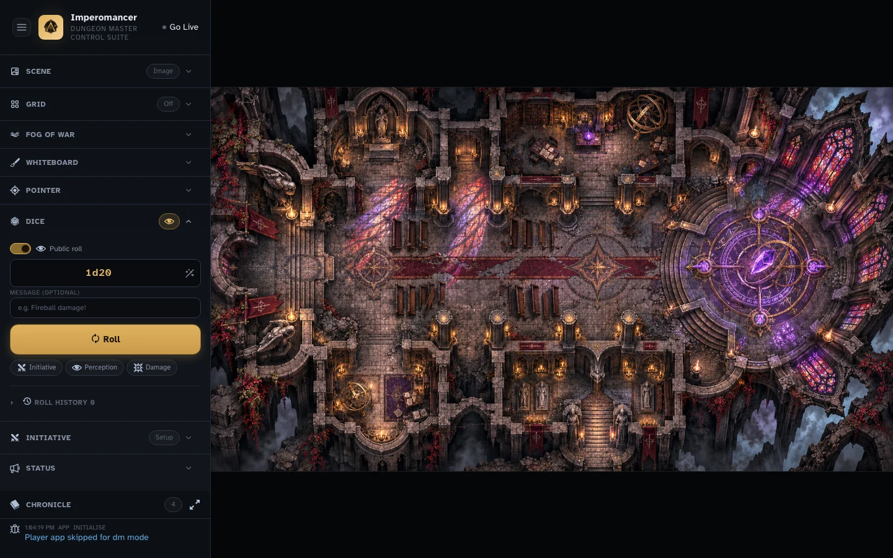
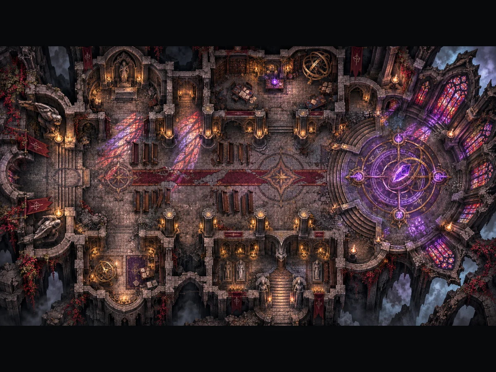

DM channel
Compose the reveal.
Prepare, frame, and publish from a calm private desk.
For the table in front of you
Imperomancer gives the Dungeon Master a private command surface and gives every player one clear, cinematic view of the adventure.

A focused tabletop instrument
Prepare scenes without broadcasting them. Then reveal maps, movement, stakes, and spectacle exactly when the moment calls for it. Imperomancer keeps the control room out of sight—and the shared surface in the story.
One command. Two perspectives.
Run a private DM workspace alongside a player-facing display. Their jobs are different; their state stays connected.
Prepare, frame, and publish from a calm private desk.
Transitions play cleanly across the shared table display.
Real captures from the DM workspace and Player display. The Player recording includes a lead-in and hold, so the transition remains legible at a glance.
An encounter, in motion
01 / Scene craft
Prepare a library of maps and video scenes. Frame each one, then move the party through cuts or fades without breaking the atmosphere.
Explore scenes
02 / Fog of war
Guide attention, maintain mystery, and redraw the edge of the unknown.
03 / Live table tools
Sketch, highlight, point, measure, and layer in tactical geometry across the full display.
The complete instrument
Explore the complete set of DM controls and see how each one resolves on the Player display.
A calmer session flow
Build scenes, position grids, set fog, and stage tactical details before the table sees a thing.
Choose the exact scene and framing to share, then bring it onto the table in a cut or a fade.
Use initiative, public dice, pointers, whiteboard marks, and status announcements without leaving the encounter.
At the table
Open the DM control on your device, send the Player display to the table, and keep the story moving.